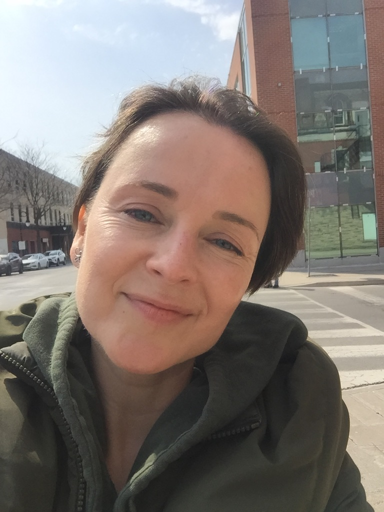

My Resume

Objective
To become a professional Website Developer.
Education
BS of Computer Science *** Brock University *** Canada, St. Catharines
Work experience
2022 – 2023 Game Facilitator at Activate in Canada, Burlington
- Game and check-in facilitation
- Facility maintenance
- Handling payment transactions
2018 – 2022 Museum Attendant at VDNH Exhibition Centre in Russia, Moscow
- Socialized and entertained visitors, shared fascinating historical facts about the exhibits
- Conducted mini tours for tourists and assisted in special events organized at various exhibitions
- Safeguarded museum collections to ensure that they stay safe, secure and undisturbed
- Assisted with translation of exhibit information
2018 – 2019 Tour Guide at Urban Adventures & ExploRussia in Russia, Moscow
- Assisted tourists in navigating the city, provided them with historical facts & legends of Moscow’s beautiful sites & people, and introduced them to local foods
2013 –2017 Office Coordinator & Director’s Assistant at SV-Transekspo in Russia, Moscow
- Translated company’s website and recorded company’s voicemail, acted as a translator at business negotiations
- Acted as a liaison between directors, colleagues and clients, monitored work of department managers
- Organized travel arrangements and accommodations
- Created PowerPoint presentations about the Company
- Maintained director’s personal calendar and executed director’s personal assignments
2010 –2012 Sales & Marketing Coordinator at CISS in Canada, Toronto
- Scheduled & executed site visits to company summer programs at local and regional campgrounds
- Entertained visiting Agents/Group Leaders and showcased the services of our programs during the busy season
- Assisted operations team with client arrivals & departures
- Organized and prepared the annual sales trip to Russia for the company’s president
- Created marketing materials & completed various short-term projects
- Provided executive & managerial assistance as the company's only bilingual Russian/English customer service representative
Skills
- Over 15 years of experience in Customer Service
- Maintained & updated company website and online content
- Managed company’s database, kept client information up to date
- Created marketing materials: DVDs, company brochures and catalogues
- Worked with diverse communities, as part of a team and on my own
- Composed, proofread & edited company documents and reports
- Showcased business products &services to clients
Other